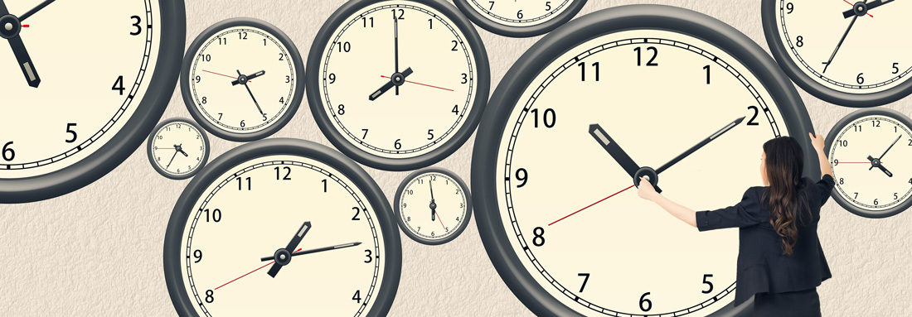

Your research supervisor will be relying on you to complete your tasks on time. In fact, his or her project may be inconveniently or even critically delayed if you are not able to submit your deliverables as expected. Effective time management skills are key to ensuring a smooth handoff between team members and the continued forward momentum of a project.
Source: elwynn/Shutterstock.com
The time management required to assist in a research project is much like that which is needed for your schoolwork. It takes estimating the duration of each necessary task (sometimes called forecasting), planning ahead, and scheduling to ensure that the work gets done. Let's review each of those skills.
Source: Creativa Images/Shutterstock.com
Once you have broken down your assigned tasks into manageable and realistic chunks, the next step in good time management, of course, is estimating the amount of time each sub-task will take. It's very common to underestimate the amount of time needed to get things done. In the words of Stanley Portny, an estimate isn't how long you want the activity to take or how long someone tells you it must take; the estimate is how long you think it really will take†(2013). Also, sometimes new tasks crop up that you were not expecting. Try to allow for a little more time than you might think to accommodate any unexpected complications. However, as Portny points out, overly padding a time estimate pretty well guarantees that the task will fill the allocated timeframe. Make the best possible estimate while allowing yourself a minimum amount of flexibility.
Once you have estimated the duration of each task, plan ahead and schedule when and where each task will get done. Keep in mind that you have a life and that this project isn't the only thing you have on the go. Many successful researchers keep a weekly agenda that lays out their academic, professional, familial, social and other activities. Block out time for your research work, and try to protect that time from other external obligations just as you try to protect your other commitments too.
After reflection, you may discover that you just cannot balance all of your obligations. At this stage, you may discover that being a research assistant is going to critically impact your marks, your health, or your employment. If this is the case, you need to reconsider your involvement in the project. You owe it to yourself and to your research supervisor to be honest about your availability. If you are not honest about this, both your quality of life and the project itself will suffer. It is very likely that your supervisor would prefer to find a replacement early on rather than have to wait for your unfinished work at a critical later stage in the project.
Once the project has begun, some researchers find that their initial time estimates were off and that they have fallen behind. This might also happen if something unexpected comes up. Project management expert Tom Kendrick recommends a few options in this scenario (2010). Sometimes, he says, brute forceâ is required; this means committing some evenings and weekends to get back on track. Another solution is to re-evaluate the tasks ahead and see which could be compressed or abandoned entirely. If budgets allow, hiring more bodies to make lighter and faster work may make a difference. In all cases, if you feel you are behind schedule, alert your supervising researcher. He/she will want to know if the workload you have been given is beyond your ability so that he/she may make adjustments. Open, clear communication is key to sticking to a schedule as a team.